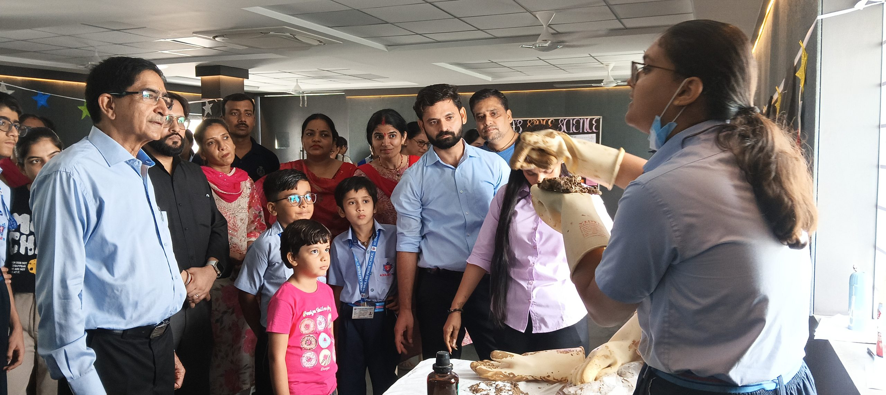
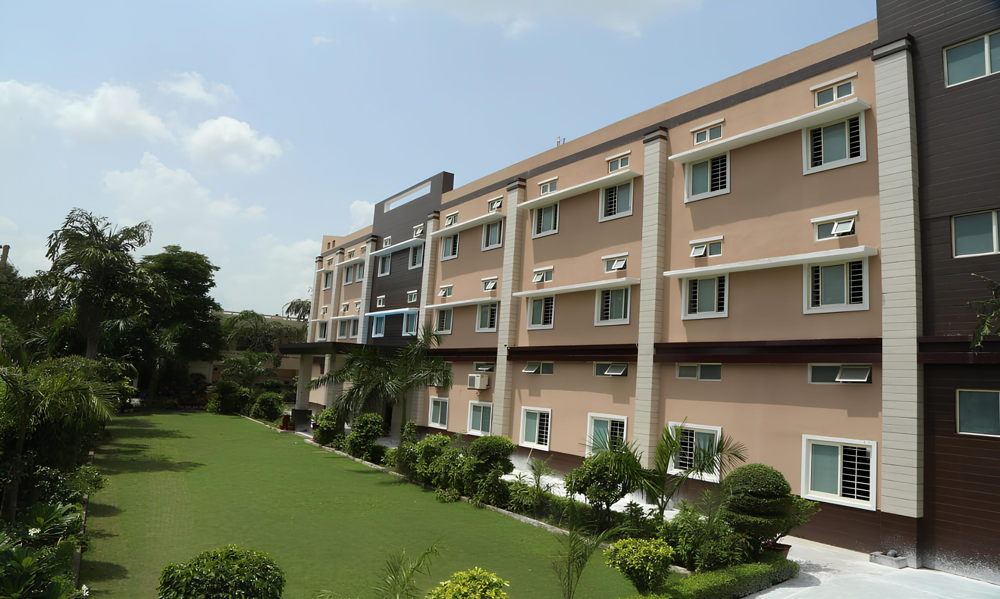
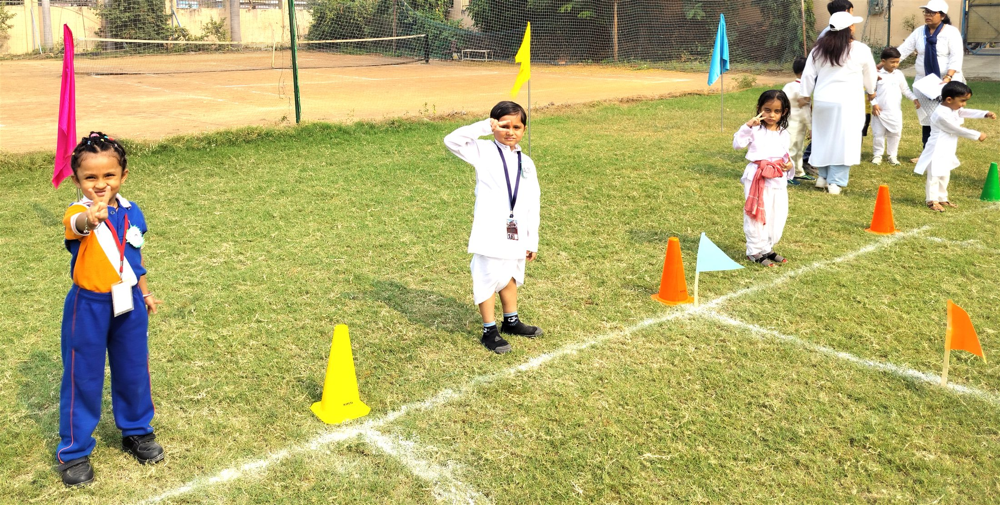

Sector 16, Faridabad · Since 1980





Our story
Founded in 1980 as Gita Convent School, the institution became Scholars Pride in 2016—carrying forward a long-standing commitment to learning in Faridabad.
The school’s mission centres on holistic, value-based and affordable quality education in a learning-focused environment.
Read our vision and values →
Academic journey
Choose a stage to find the information relevant to your child.
Pre-Primary
The school serves learners from Pre-Nursery onward. Detailed stage curriculum, assessment and activity information awaits academic approval.

Campus & infrastructure
Select an image to read its verified context. The two gallery rows move in opposite directions and pause on interaction.

Personal growth and academic achievement, together.
Principal’s message
“At Scholars Pride, our goal is to help each child realize their full potential and develop into confident, contributing citizens.”
Why Scholars Pride
Purposeful academics, expression and participation come together in the school’s stated approach.

Creative opportunities encourage confidence and active participation.

Academic learning is connected with social, emotional and cognitive development.

Sports, co-curricular activities and competitions form part of the school experience.
The school’s stated approach emphasises responsibility, values and grit.

The school welcomes parent input to strengthen its teaching and learning environment.
Beyond the classroom
Verified school photography captures public speaking, creative expression, outdoor play and school events.
Explore the photo gallery

Results & achievements
Every result below opens the school’s original published source.
2025–26
Open the school-published result image for the stated academic year.
View original source ↗Admissions
Fees are public. Eligibility, class availability and document requirements must be confirmed by the school.
Begin with the Academic Journey for your child’s class.
Use the school’s approved 2026–27 fee document.
Check availability, eligibility and required documents.
A visit is confirmed only after the school responds.
From the school
A concise editorial view of verified Scholars Pride resources.
Parent FAQs
Clear answers to common questions about classes, fees, documents and visits.
The school describes education from Pre-Nursery through Class XII. Confirm current class availability directly with the school.
The official fee structure for academic session 2026–27 is linked in the Admissions section and footer.
The current required-document list has not been verified. Contact the school before preparing or submitting personal documents.
The school states that it has been affiliated with CBSE since 1984. Its affiliation document is available under Mandatory Public Disclosure.
No live booking system has been confirmed. Call or email the school to request a visit and await confirmation.
Visit campus
A campus visit can help families understand the learning environment and ask questions directly.
Scholars Pride School